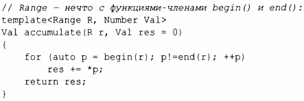

⇐7.3.1 Использование концептов 7.4 Вариативные шаблоны⇒
Хорошие абстракции тщательно выращиваются из конкретных примеров. Не рекомендуется пытаться "абстрагироваться", стремясь предусмотреть все мыслимые потребности и методы; это направление к неэлегантному и раздутому коду. Вместо этого начните с одного - а лучше с нескольких - конкретных примеров реального использования и попытайтесь устранить несущественные детали. Рассмотрим следующий код:
Очевидно, что это один из множества способов вычисления суммы последовательности чисел.
Рассмотрим, что же делает этот код менее обобщенным, чем он должен быть.
Отвечая на первые четыре вопроса превращением конкретных типов в аргументы шаблона, мы получаем простейшую форму алгоритма accumulate стандартной библиотеки:
Теперь мы имеем следующее.
Быстрое исследование (или еще лучше - измерение) показывает, что код, сгенерированный для вызовов с различными структурами данных, идентичен коду, который вы получаете из исходного примера с ручным кодированием. Например:
Процесс обобщения конкретного фрагмента кода (или нескольких фрагментов) при сохранении производительности называется подъемом (lifting). Наилучший способ разработки шаблона зачастую представляет собой такую последовательность действий:
Обычно повторение begin () и end () утомляет, так что можно немного упростить пользовательский интерфейс:
Для полной обобщенности мы можем абстрагировать и операцию +=; см.§ 14.3.